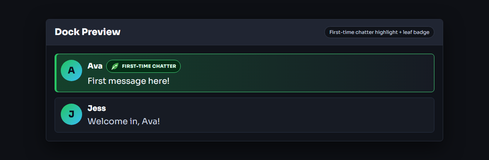

What this feature does
First-time chatter detection adds firsttime=true to a viewer's first stored chat message for that source. The dock can use that flag for background shading, a first-time-only beep, and the optional leaf badge.

Required setup
- Open the Social Stream Ninja popup.
- Keep Disable the local message database turned off.
- Turn on First-time chatter detection.
- Leave your dock or overlay open with the same session ID.

Important: The local database is required. If the database is disabled, Social Stream Ninja cannot tell whether someone is new.
Display options
- Background shading: enabled by default in the dock. Keep No background shading for first-time chatters turned off if you want the highlight.
- Leaf badge: turn on Mark first-time chatters with a custom badge to prepend a small leaf badge to the chatter's badges.
- Dock beep for first-time chatters: turn this on if you want the dock beep to happen only for first-time chatters.
- Beep for new or returning chatters: turn this on if you also want a sound for viewers who return after 8 or more quiet hours.
Using the flag in custom overlays
Custom overlays can look for data.firsttime === true. If the leaf badge option is enabled, the badge is included in chatbadges before the message reaches overlays.
{
"chatname": "Ava",
"chatmessage": "First message here!",
"type": "twitch",
"firsttime": true
}If it does not show
- Confirm Disable the local message database is off.
- Confirm First-time chatter detection is on.
- Confirm No background shading for first-time chatters is off if you expect a highlight.
- Confirm Mark first-time chatters with a custom badge is on if you expect the leaf badge.
- Test with a username/source combination that is not already stored in the local database.